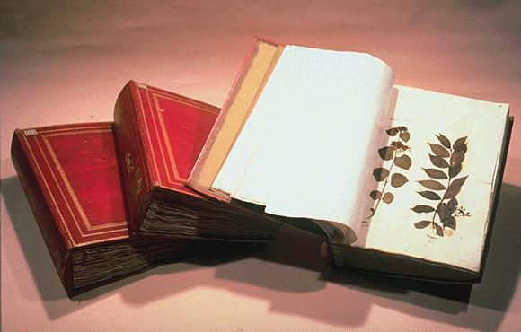
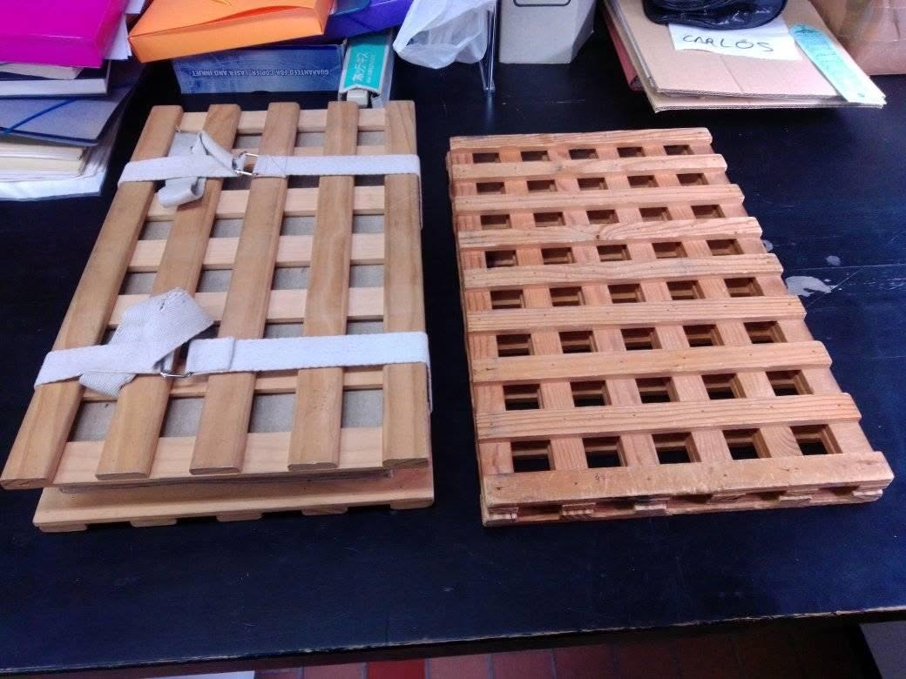
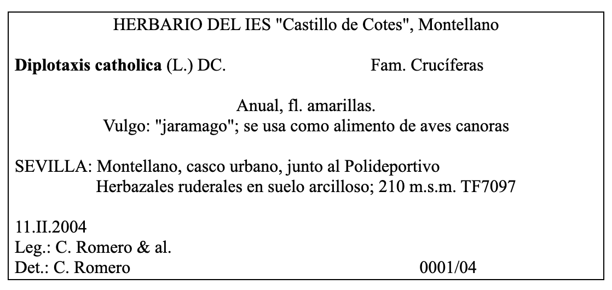
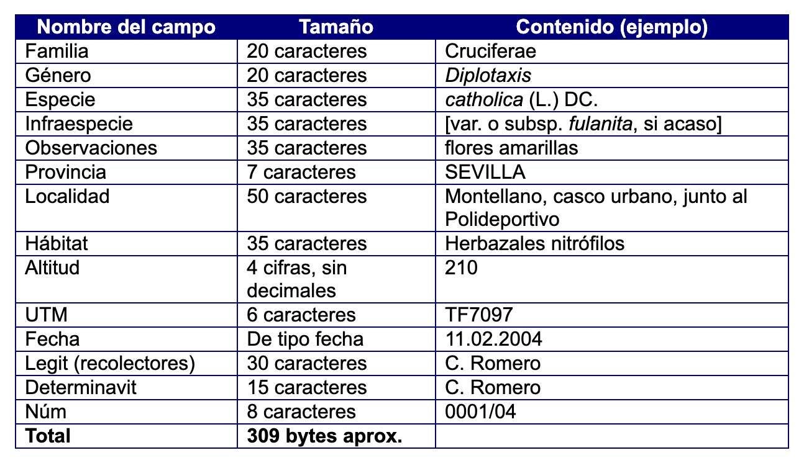

Universidad de Sevilla
Universidad de Sevilla |
|
||||
I.- Introducción |
||||
|
La Taxonomía
Vegetal es la parte de la Botánica que se
encarga de la identificación, nomenclatura y
clasificación de las plantas. Una de sus bases
metodológicas es la técnica del herbario. Una de las
exigencias del método científico es que las
observaciones y los resultados de un investigador
puedan ser repetidos y discutidos por otros. La
conservación de las muestras vegetales en una
institución es por tanto imprescindible para la
validez y el progreso de dicha ciencia, que es la base
sobre la que se asientan las restantes especialidades
de la Botánica (figura 1). |
||||
|
||||
|
Sin embargo, en su origen, el
herbario fue una solución técnica a un problema de
tipo práctico: la necesidad de conocer bien las
especies para su uso medicinal. Hay día los
médicos utilizan vademécums con toda la información
actualizada sobre los medicamentos y sus principios
activos, pero en la Edad Media los médicos
usaban unos libros con ilustraciones de las plantas
medicinales conocidas: los herbolarios (no
confundir con herbarios). La mayoría de esas plantas
fueron usadas en la Grecia clásica y muchas
provenían de Oriente. Algunos médicos con
inquietudes científicas se dieron cuenta de que a
menudo las ilustraciones no reflejaban bien la
realidad, ya fuera porque representaban plantas
diferentes a las que crecían en su patria, o bien
porque de tanto copiar las ilustraciones se habían
alterado tando los caracteres que ya no se
correspondían con ninguna planta real. Es posible
que algunos desecaran pequeños fragmentos de hojas o
flores de las plantas que conocían dentro de dichos
libros, para añadir un dato más real y poder
reconocer mejor la especie local que ellos usaban.
Así pudo nacer la técnica del herbario, que al
principio se llamó hortus siccus.
Estos primeros herbarios podían ser encuadernados o
podían adoptar la forma de carpetas. (figura 2).
|
||||
 Figura 2.- Tomos del herbario de Andrea Cesalpino (1524-1603), médico y botánico italiano. |
||||
| La invención del herbario se atribuye oficialmente a un tal Luca Ghini (1490-1556), profesor de Botánica de la Universidad de Bolonia... Sí, sí, la Botánica es más antigua que la Biología y se enseñaba entonces a los médicos Su método consistía en desecar las plantas bajo presión dentro de un pliego de papel, permitiendo así la conservación de las muestras para su estudio posterior. Su método se difundió al resto de Europa y adquirió importancia durante los siglos XVII y XVIII, cuando los descubrimientos geográficos produjeron una avalancha de nuevas especies que era necesario estudiar. | ||||
|
Se
crearon así los principales herbarios institucionales,
asociados a jardines botánicos que gestionaban los
recursos vegetales de las colonias. En la actualidad existen centenares de grandes herbarios que atesoran un inmenso archivo vegetal que es el resultado y a la vez el testimonio científico de la investigación en Botánica. Se han realizado muchos progresos en los materiales, la conservación y la documentación de los herbarios, pero la técnica básica sigue siendo ese gesto tan secillo de aquel profesor del s. XVI: introducir una flor entre dos hojas de papel. |
||||
II.- Objetivos |
||||
|
La elaboración de un herbario de carácter local tiene los siguientes objetivos:
|
||||
III.-
Materiales para la recolección, prensado y estudio de
las plantas
|
||||
|
||||
 Figura 3.– Dos modelos de prensa de mano. |
||||
IV.- Bibliografía florística recomendada (para las provincias de
Cádiz, Huelva y Sevilla) |
||||
|
||||
|
||||
V.- Mapas |
||||
Para localizar los lugares de recolección se utilizan actualmente servicios de geolocalización disponibles en Internet. Sin embargo, para consultar la toponimia más precisa y obtener información sobre el tipo de suelo, litología, uso del terreno, etc. es necesario la mayoría de las veces consultar cartografía especializada en verisón impresa o digitalizada si la hubiera. |
||||
i. Mapas
provinciales de suelos. Sevilla. Instituto de Nacional
de Investigaciones Agrarias (1975)
ii. Estudio
Agrobiológico de la provincia de Sevilla. Diputación
Provincial (1962). Contiene mapa de suelos E. 1: 250.000
i. Estudio
Agrobiológico de la provincia de Sevilla. Diputación
Provincial (1962). Contiene mapa de vegetación E. 1:
250.000 ii. Mapa de las series de vegetación de España 1: 400.000, de S. Rivas-Martínez, ICONA (1987). Ej.: hojas nº 26, Cádiz |
||||
VI.- Papel y medios de montaje |
||||
|
||||
VII.- Productos químicos |
||||
|
La mayoría de los productos que se utilizan en la
conservación de un herbario son tóxicos y no son
recomendables para un herbario de carácter local. Los
insecticidas a base de piretrinas de uso doméstico
son los únicos recomendados para eliminar posibles plagas
y siempre siguiedo las recomendaciones del fabricante. Los productos fungicidas son tóxicos y caros, por lo que es mejor utilizar medios físicos y preventivos: el control de la humedad es el más barato y eficaz. Se consigue controlando que la desecación de las plantas sea rápida y completa. Se pueden utilizar bolsitas de gel de sílice que se introducen en las cajas o armarios y que se reutilizan secándolas periódicamente en una estufa. |
||||
VIII.- Material de oficina |
||||
|
||||
IX.-
Métodos básicos
|
||||
1. Antecedentes |
||||
|
Es importante buscar y recopilar la información previa
existente sobre la flora local. En primer lugar
tomando como referencia principal la flora
regional si existe, por ejemplo "Flora Vascular de
Andalucía Occidental" que se menciona en el apartado de
Bibliografía. Otras fuentes a investigar son las tesis
doctorales y artículos publicados en revistas
especializadas. Por ejemplo, para las sierras subbéticas
sevillanas existe una tesis dosctoral leída en la
Universidad de Sevilla por el prof. Emilio Ruiz de
Clavijo cuyos resultados están publicados. Véanse por
ejemplo:
· E. Ruiz de Clavijo, B. Cabezudo & E. Domínguez (1984) Contribución al estudio florístico de las serranías subbéticas de la provincia de Sevilla. Acta Botanica Malacitana 9: 169-231. Universidad de Málaga. · Así como numerosos artículos sobre la flora andaluza publicados principalmente en las revistas Lagascalia (Univ. de Sevilla) y Acta Botanica Malacitana (Univ. de Málaga) |
||||
2. Factores geográficos |
||||
|
Se recopilará la información existente sobre geología
(mapas geológicos, etc.), suelos (mapas de
suelos), cultivos (estudios agro-biológicos)
etc., así como los datos climatológicos
correspondientes a las estaciones más próximas a la zona
de estudio, que pueden verse en la Agencia Estatal de
Meteorología (https://www.aemet.es/es/eltiempo/observacion)
|
||||
3. Legislación |
||||
|
Es muy importante conocer la legislación vigente sobre
recolección de especies de flora silvestre y los catálogos
de especies amenazadas. Para Andalucía se debe consultar
la Ley 8/2003 de 28 de Octubre de la flora y la fauna
silvestres (BOJA de 12 de Noviembre) y el LIbro Rojo
de la Flora Silvestre Amenazada de Andalucía, tomos
1 y 2 (G. Blanca & al., 1999-2000). Además, hay que
tener en cuenta que en los espacios naturales protegidos
no se pueden recolectar muestras sin permiso
administrativo previo. |
||||
4. Recolección |
||||
Las salidas al campo para realizar la recolección deben de
distribuirse a los largo de todo el año, con una
frecuencia mayor en los períodos de máxima floración. Para
un área de muestreo que se pueda recorrer en un solo día,
puede servir de referencia el siguiente plan de trabajo:
De las plantas herbáceas de mayor tamaño y de las leñosas se desgaja o se corta una rama con flores y/o frutos. Si fuera necesario se toma otra rama con hojas. En el caso de plantas con hojas basales (generalmente grandes), se desprende una de dichas hojas para prepararla en pliego aparte si no cabe junto con las flores. Las plantas con bulbos o tubérculos se deben recolectar lo menos posible, para no dañar las poblaciones. Cuando estos órganos son pequeños (2-3 cm) se pueden cortar en rodajas verticales para su prensado. Cuando son grandes es mejor dejarlos "in situ". Se excava al pie y se extrae la planta completa con el órgano perdurante. Luego se anotan las características del bulbo o tubérculo (tipo, tamaño, posibles coberturas de hojas especiales, etc.) o se obtienen fotografías de detalles. A continuación se separa la parte aérea y se vuelve a enterrar el órgano subterráneo. En todos los casos anteriores es conveniente recolectar más de una muestra para suplir posibles pérdidas o para obtener duplicados. También es conveniente, sobre todo al principio, recolectar en una bolsita un ramillete de flores para poderlas diseccionar en el laboratorio, manteniendo intactas las destinadas al pliego para el herbario. Hay que poner atención a las praderitas de pequeñas herbáceas que crecen en terrenos arenosos húmedos que se secan pronto, así como a las plantas acuáticas, que a veces no florecen o tienen flores casi invisibles. Las plantas recolectadas en un mismo lugar se introducen en la misma bolsa de plástico, con una etiqueta escrita a lápiz donde se anota la fecha y el lugar. Las plantas más pequeñas o delicadas pueden guardarse dentro de una bolsa más pequeña para que no se pierdan entre las grandes. Hay casos singulares, como los de las plantas parásitas o las plantas crasas que requieren consulta especializada. |
||||
5. Documentación |
||||
En cada punto de
muestreo se anotará en el cuaderno de campo (figura 6)
la siguiente información:
Para cada especie que se recolecte en el mismo lugar se harán las siguientes anotaciones:
|
||||
6. Prensado y desecación |
||||
|
Cuando la salida al campo es de corta duración (por
ejemplo una mañana), pueden prepararse las plantas por
la tarde en el laboratorio, o guardar las bolsas
anudadas en un frigorífico (a unos 8 º C) para preparar
las plantas al día siguiente con la prensa pesada (figura
7). Cuando la excursión dura un día completo o si
el clima es muy adverso (demasiado calor), se preferible
hacer una paradita en un lugar adecuado y preparar las
plantas con la prensa de mano.
https://crzarco.github.io/algas/En ambos casos, cada planta se coloca dentro de un pliego de papel de periódico en cuya esquina inferior derecha (por la parte exterior,) se habrá anotado previamente el número de recolección. Se despliega la planta de forma que queden sus partes bien visibles (en especial las flores o frutos), eliminando las partes que sobresalgan o que abulten demasiado, hojas superpuestas, etc. Luego se coloca el pliego sobre una almohadilla secante (varios pliegos de papel de periódico o de estraza grapados) y se tapa con otra, a la vez que se ejerce cierta presión con las manos para acomodar la planta. Habrá que tener especial cuidado con las plantas espinosas, que conviene someter a "tratamiento" previo aplastándola entre dos almohadillas o dos tablas en el suelo, mejor con ayuda de los pies que de las manos. Los bulbos, tubérculos y frutos voluminosos, en caso de que sea necesaria su recolección, se guardan aparte para secarlos en estufa o al sol. Las plantas acuáticas se preparan siguiedo la misma técnica que para el prensado de las algas. Véase el apartado "Conservación de las algas" en la página "Prácticas de Biología Marina": |
||||
|
||||
|
Cuando tengamos el paquete formado por pliegos y
almohadillas se mete en la prensa y se aprieta. Al
principio no es conveniente ejercer una presión excesiva,
sólo la necesaria. En horas y días sucesivos se aumentará
la presión a medida que las plantas pierdan agua y
volumen. Al día siguiente hay que cambiar todas las almohadillas húmedas por otras secas, dejando cada planta dentro de su pliego de campo. Lo mismo se repetirá diariamente al menos durante tres o cuatro días seguidos. Luego se puede cambiar cada dos días y empezar a extraer los pliegos que estén secos. Éstos se reunen en paquetes sin apretar y se ponen al sol con algún peso encima para que no se vuelen, y sin que le dé el sol directamente a las plantas, para que acaben de secarse. Cuando en la misma prensa se preparan plantas delicadas junto con otras más robustas, espinosas o suculentas, conviene separarlas mediante un panel de madera intermedio, para que la humedad, las espinas o los bultos de éstas últimas, no alteren la desecación de las primeras. La conservación de los colores de las flores mejora mucho si se plancha cada pliego (sin usar el vapor) por encima de la almohadilla secante. Esto se puede hacer a partir del segundo día de prensado. Luego se vuelve a meter en la prensa. |
||||
7. Desinsectación y conservación |
||||
|
El método recomendado para colecciones particulares y
herbarios locales es la congelación a -18 º C durante tres
días, una vez bien seco el material y envuelto en bolsas
de plástico precintadas. Las colecciones ya existentes en
el herbario se someterán a desinsectaciones periódicas a
ser posible todos los años. Cada tres días se saca un
paquete y se mete el siguiente, conservando el mismo
orden. Hay que tener en cuenta que el material seco y
congelado es muy frágil y que hay que evitar a toda costa
la humedad. Si el tiempo es muy húmedo es mejor esperar a
otro momento. Muchas plantas traen ya dentro las larvas que podrían destruirlas mientras se secan o incluso después. El método descrito garantiza la destrucción de todos los insectos. Las bolas de naftalina pueden ser útiles para mantener alejados a los insectos. Los más peligrosos son varios géneros de coleópteros voladores ("coquitos") de las familias Anobidae y Dermestidae cuyas larvas destruyen las plantas secas, y también los "pececillos de plata" (Lepisma saccharina) y las cucarachas, que se comen el papel y la cola. Para evitar los hongos lo más aconsejable es desecar las plantas muy bien antes de guardarlas y preservar los armarios de la humedad. Por ejemplo calentando la habitación en períodos húmedos o poniendo bolsitas de gel se sílice en las cajas (estas bolsitas hay que secarlas periódicamente). Es importante, para evitar contaminaciones, el no trabajar con plantas frecas o sin desinsectar en la misma habitación donde se guarda el herbario. |
||||
8. Etiquetado |
||||
|
Con los datos de la libreta de campo se elaboran las
etiquetas para cada planta. Una forma sencilla es hacer el
número suficiente de etiquetas iguales para todas las
plantas de una misma colección, y luego añadir a mano los
datos concretos de cada ejemplar. Otra solución es hacer
las etiquetas a partir de una base de datos cuando esté el
material identificado. Los procesadores de texto modernos tienen alguna opción de "combinar correspondencia" o similar que se usa para hacer cartas personalizadas. Ese sistema puede utilizarse también para imprimir etiquetas extrayendo los datos de un fichero que puede ser un texto delimitado por tabuladores, una hoja de cálculo, etc. En cualquier caso, puede servir formato de la figura 8. |
||||
 Figura 8.- Ejemplo de etiqueta en limpio para plantas de herbario. |
||||
|
Importante: cuando se tiene la certeza de que el
etiquetado se va a retrasar por falta de tiempo o
por acumulación de trabajo, es conveniente hacer etiquetas
provisionales a mano, en previsión de una pérdida de datos
que arruinaría el valor de los pliegos. |
||||
9. Montaje |
||||
|
El montaje consiste en fijar el ejemplar o ejemplares en
un soporte definitivo junto con su etiqueta. Hay diversos
métodos. El más sencillo consiste en fijar las plantas
mediante tiritas de adhesivo de tela (esparadrapo o
similar, no vale tipo "fixo"), sobre una cartulina o papel
grueso definitivo. El soporte definitivo en los herbarios importantes suele seguir alguno de estos modelos:
No se
aconseja usar como soporte definitivo papel de estraza o
similar, pues suelen acumular humedad. En primer lugar se pega la etiqueta en el ángulo inferior derecho del pliego (figura 10). Luego se dispone la planta (o las plantas) en una posición lo más natural posible (figura 11) y se sujetan por aquellas partes que no importe tapar, nunca por la base de las hojas o tocando las flores, salvo que éstas sean muy grandes, sino por el centro de los entrenudos, pedicelos y pedúnculos (figura 12). |
||||
|
||||
|
||||
|
Cuando las plantas son muy pequeñas se montan una o dos y
el resto se mete en un sobre de papel, que se fijará con
cola cerca del centro de la cartulina o en la parte
superior. Las partes que se hayan desprendido o se puedan
desprender, como flores sueltas, hojas o semillas, se
meten también en un sobre de papel que se pegará
preferentemente cerca del ángulo superior derecho del
pliego. |
||||
| Nota: en
los herbarios de estudiantes, que suelen ser
provisionales, se recomienda no hacer ningún tipo de
montaje, para facilitar la revisión por parte del profesor
y el reciclaje de los pliegos. |
||||
10. Almacenamiento y ordenación |
||||
|
Los pliegos deben resguardarse del polvo, de la humedad,
de la luz directa y de los insectos.
Es conveniente guardarlos en cajas de cartón que
cierren bien. Éstas a su vez se colocan en una armario
metálico de cierre hermético.
Los pliegos de especies de un mismo género se
introducen en una camisa (pliegos de papel o cartulina
algo más grandes y con solapa) con el nombre del
género y de la familia. Si son muchos se abre otra
camisa.
|
||||
11. Bases de datos |
||||
|
Para un herbario personal o local es suficiente con una
base de datos sencilla, de un solo fichero, que contenga
un registro por cada ejemplar del herbario (por cada
número de recolección), aunque el resto de la información
de la etiqueta sea algo repetitiva. Los datos etnobotánicos (nombre vulgar, usos etc., es mejor incluirlos en otra base de datos en la que habrá un solo registro por cada especie, o bien incluir un campo con referencias a documentos de texto. Para herbarios más grandes es mejor un sistema de varias bases de datos relacionadas mediante campos de código (fichero de taxones, fichero de localidades, etc.), lo que hace más lenta la consulta y recuperación de datos. Un ejemplo de estructura de base de datos sería la siguiente (figura 13): |
||||
 Figura 13.- Ejemplo de estructura de base de datos sencilla. |
||||
| X.- Uso del herbario |
||||
Los usos de un
herbario local pueden resumirse así:
Todos estos usos pueden realizarse también en colaboración con otros herbarios de la comarca o con entidades públicas (Delegaciones de Medio Ambiente, Parques Naturales, etc.) o privadas (asociaciones culturales o ecologistas, cooperativas agrícolas). |
||||
| XI.- Bibliografía básica de esta
guía |
||||
|
||||
|
Para saber más sobre los herbarios españoles: Asociación de Herbarios Íbero-Macaronésicos: htpss://ahim.org |